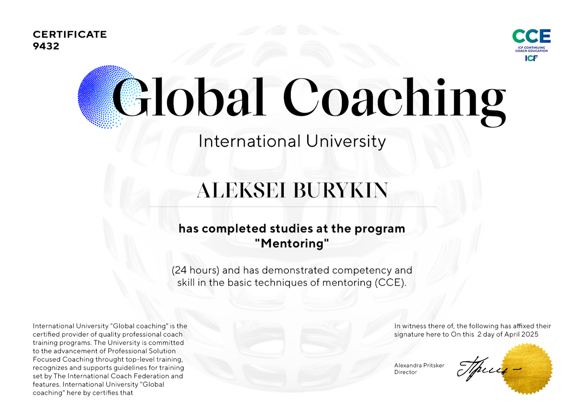
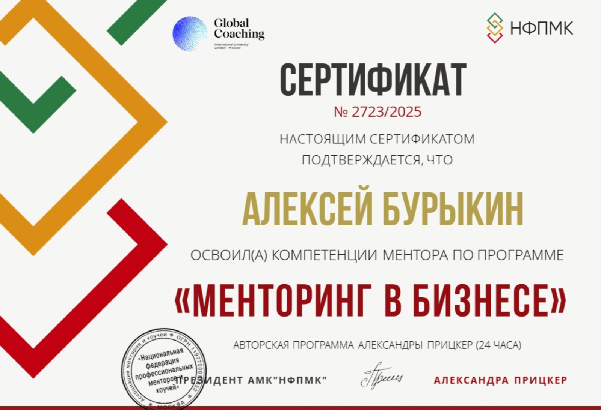
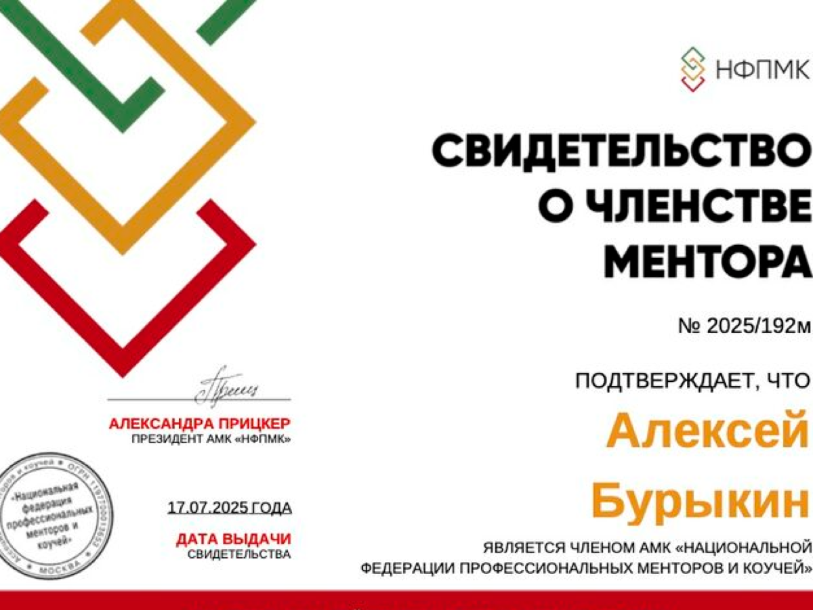

Обучение и книги
Знания появляются. Поведение системы остаётся прежним.
Пробная ментор-сессия для собственников и топ-руководителей. Структурированный разбор управленческого затыка и фиксация дальнейших решений.
Обычно к разговору со мной приходят руководители и собственники, у которых ситуация выглядит примерно так:
Без вас решения замедляются, а ключевые процессы «провисают».
Делегирование формально есть, но ответственность в итоге всё равно возвращается к вам.
Команда не растёт управленчески: задачи выполняются, но инициативы и самостоятельности нет.
Контроль приходится усиливать, иначе качество и сроки «плывут».
Вы чувствуете потолок своей роли, но не видите следующую управленческую позицию.
Напряжение из бизнеса начинает регулярно залезать в личную жизнь.
Если вы отметили 2–3 пункта — это не частные сбои. Обычно это системный управленческий затык.
Когда возникает системный затык, руководитель действует логично. Но чаще всего проблема лежит глубже, чем инструменты.
Знания появляются. Поведение системы остаётся прежним.
Работают в их контексте. Ваш контекст — другой: структура, масштаб, зрелость команды.
Если архитектура управления не выстроена, новый человек либо встраивается в старую модель, либо вступает в конфликт с вами.
Даёт краткосрочную управляемость. Но закрепляет зависимость компании от вашего личного участия.
Если ничего не менять, зависимость компании от вас будет только усиливаться.
Пробная ментор-сессия — это не знакомство и не предварительный разговор. Это полноценный разбор вашей управленческой ситуации.
Мы отделим симптомы от причины и зафиксируем, где именно находится проблема: в роли, в структуре, в распределении ответственности или в системе управления.
Вы увидите, что относится к вам как к руководителю, что — к зрелости команды, а что — к архитектуре управления.
Не абстрактные рекомендации, а конкретные направления изменений: что усиливать, что перестраивать, что прекращать.
В конце встречи вы понимаете, нужен ли вам углублённый формат из нескольких сессий или достаточно полученной ясности.
Пробная сессия — самостоятельный формат. Решение о дальнейшем контракте принимается только если вы видите ценность.
Я не даю универсальных рецептов и не работаю по шаблону. Каждый разговор строится вокруг вашей конкретной ситуации, цифр, ролей и решений. Этот формат основан на 25+ годах управленческой практики.
Мы разбираем текущие процессы, распределение ответственности и управленческую архитектуру. Без отвлечённых моделей ради моделей.
Если затык связан с вашей ролью или стилем управления, мы это называем прямо. Без обвинений, но и без сглаживания.
Цель — не усилить вашу личную загрузку, а выстроить среду, в которой ответственность берёт команда.
Работа строится не из позиции «консультанта со стороны», а из опыта управления и прохождения собственных кризисов роста.
Я не управляю вашим бизнесом. Я помогаю увидеть структуру и принять осознанное управленческое решение.
Разговор остаётся между нами. Мы обсуждаем реальные решения, а не публичные версии происходящего.
Это взрослый диалог о роли, системе и ответственности — без иллюзий и без давления.
Менторская работа — это не универсальная услуга. Она подходит тем, кто готов к управленческому разбору своей роли и системы.
Если вы готовы к взрослому управленческому разговору — формат сработает. Если нет — лучше это понять до начала работы.
Предприниматель и управленец с более чем 25-летним опытом. Прошёл управленческие кризисы изнутри — как собственник, как операционный директор, как ментор.
Проходил этапы роста бизнеса, перегрузки операционкой, кризисов управления и необходимости перестраивать систему ответственности. Знаю, как выглядит управленческий затык не из теории, а из практики.
Я не консультант со стороны и не коуч, задающий вопросы по шаблону. Веду взрослый управленческий диалог, в котором важны структура, роль и ответственность. Моя задача — помочь увидеть реальную управленческую картину и принять решение, которое изменит систему, а не усилит вашу личную нагрузку.
Работаю из позиции управленца, лично прошедшего кризисы роста.
Цель — среда, в которой ответственность берёт команда, а не собственник.
Сложные вопросы вместо мягких формулировок. Без давления и без сглаживания.
Формат работы основан на практическом управленческом опыте и профессиональном обучении менторингу.

Certificate 9432 · CCE / ICFПрограмма “Mentoring”, 24 hours. Подтверждена базовая компетентность в менторинге в формате Continuing Coach Education.

Сертификат НФПМК № 2723/2025Освоение компетенций ментора по авторской программе Александры Прицкер. Объём обучения — 24 часа.

Свидетельство № 2025/192мПодтверждённое членство в Национальной федерации профессиональных менторов и коучей.
Выбирайте удобный формат — я адаптируюсь под ваш ритм и задачу. Никаких скрытых условий и автоматических контрактов. Решение о продолжении принимается только если вы видите ценность.
Структурированный разбор текущей управленческой ситуации. Фиксация ключевого затыка и направлений решений.
Если по итогам первой встречи вы видите ценность в углублённой работе, возможен формат из 3 и более сессий.
Короткий самодиагностический опрос. Помогает до сессии понять, где находится ваш управленческий затык.
И про то, и про другое. Мы разбираем управленческую систему через вашу роль в ней. Если затык в структуре — работаем со структурой. Если в роли руководителя — честно это обозначаем.
Такого обычно не происходит, потому что цель первой встречи — сформулировать затык и направления решений. Но если вы поймёте, что формат вам не подходит — на этом работа заканчивается. Без обязательств продолжать.
Это менторский формат. Я не даю универсальных решений «по учебнику» и не работаю только вопросами. Мы опираемся на ваш контекст и предпринимательский опыт, чтобы сформировать управленческие решения.
Специальной подготовки не требуется. Достаточно быть готовым открыто обсуждать текущую ситуацию: структуру команды, зоны ответственности, управленческие сложности.
Да. Первая сессия заканчивается фиксацией ключевого затыка и направлений решений. Без этого разговор не имеет смысла.
Тогда мы это аккуратно обозначим. Без обвинений и без давления. Речь всегда идёт не о личности, а о роли и управленческой позиции.
Онлайн · 30 минут · 0 ₽. Без обязательств продолжать. Вы получаете формулировку ключевого управленческого затыка и карту первых решений.